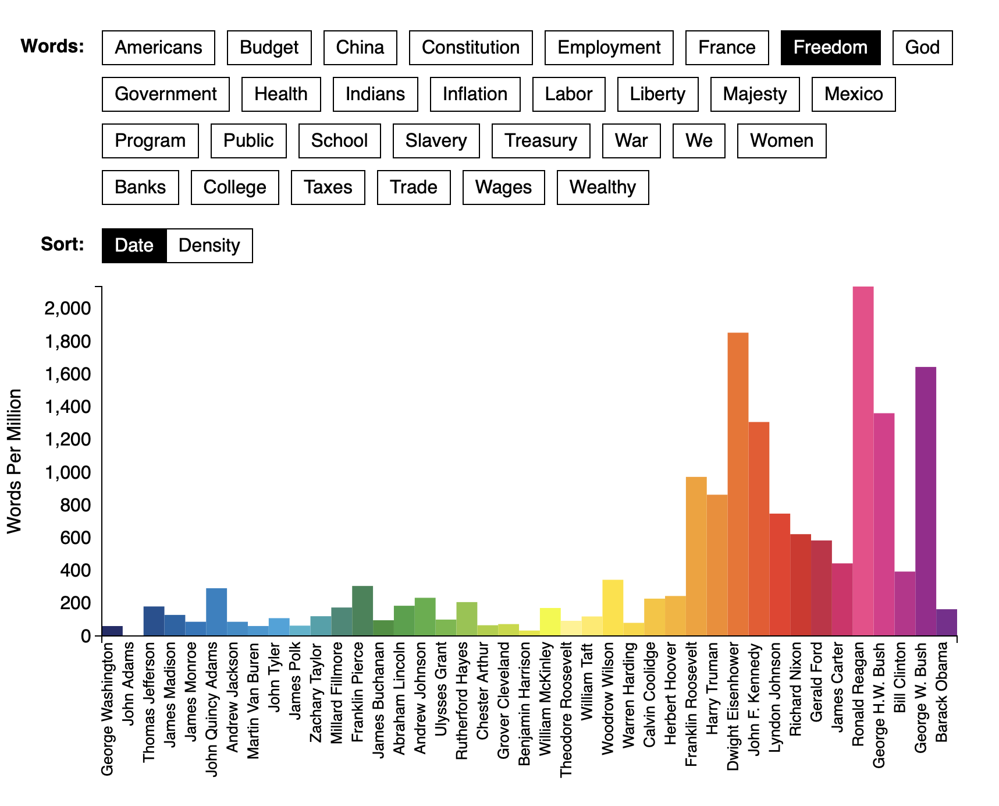
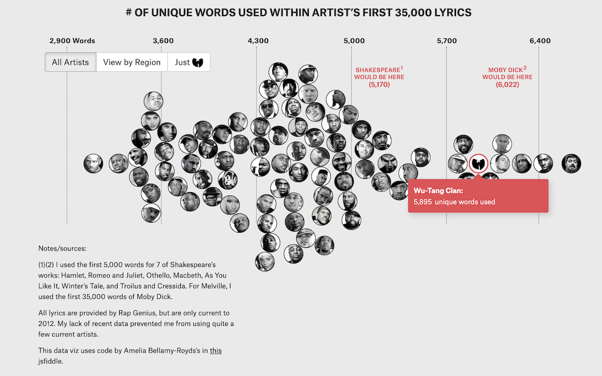
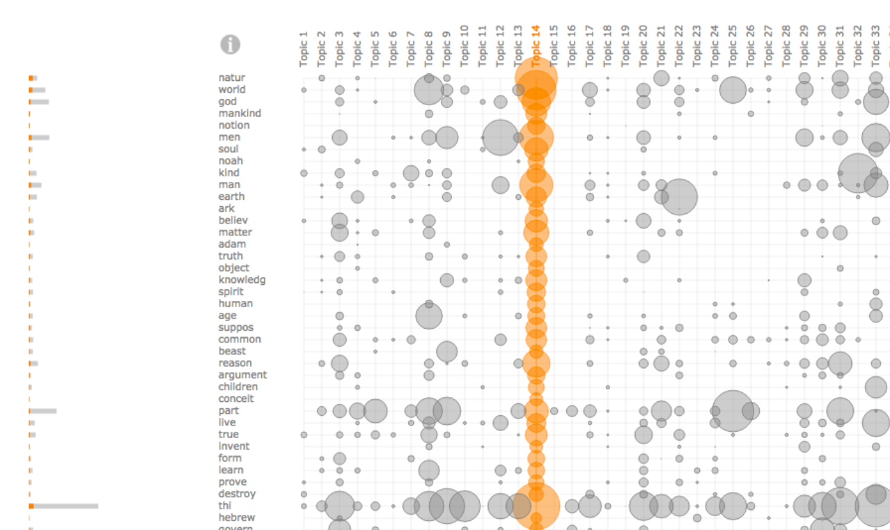

Perspectives on Linguistic Data Science
John P. McCrae - University of Galway
Course at ESSLLI 2024

Distant Reading
Close vs Distance Reading
- Close reading is the traditional way of reading a text
- Distant reading uses computational methods to analyse canons of text
- Term attributed to Franco Moretti (2000)
"So far as the engines of history are concerned, meaning does not matter. In principle, one could study the history of a literary tradition without reading any of literature. ... the main virtue of the computerized content analysis methods I use is that they save one from actually having to read the literature" - Martindale
"The Great Unread"
- Thousands of books published in 19th century England
- Only a few studied now by famous authors
- Computational techniques can reveal trends
- Titles became shorter
- Text became less abstract
Analysis methods for Distant Reading - Diachronic Frequency Analysis
Source: Figure 1.4.1 – The Atlantic’s “The Language of the State of the Union” © Benjamin Schmidt, Mitch Fraa, Chris Barna, Libby Bawcombe, Noah Gordon, Betsy Ebersole, Jennie Rothenberg GritzAnalysis methods for Distant Reading - Lexical Diversity
Source: Matt DanielsAnalysis methods for Distant Reading - Topic Modelling
Narrative Analysis
- Content (topics, characters, events, ...)
- Structure (plot, character relationsships, ...)
- Discourse (narrator, style, ...)
Approach: collect text, annotate, analyse
Linguistic Linked Data
Structured and Unstructured Data
- Unstructuted data is text, images, audio, video, ...
- Structured data is data in a database
- Lots of knowledge, especially in graph form
Wikidata
Massive knowledge base
Q437Linked Data
Linked Open Data Cloud

Linguistic Linked Open Data Cloud

Promise of Linguistic Linked Data
- Representation and Modelling
- Structural Interoperability
- Federation
- Ecosystem
- Expressivity
- Conceptual Interoperability
- Dynamic Import
Interoperability
Different annotation schemes
| Susanne | Penn | |
| The | AT | DT |
| Fulton | NP1s | NNP |
| County | NNL1cb | NNP |
| Grand | JJ | NNP |
| Jury | NN1c | NNP |
| said | VVDv | VBD |
| Friday | NPD1 | NNP |
NLP Interchange Format
OntoLex-Lemon - Lexicon Model for Ontologies

Summary
Summary
- Social media is an important data source (but be careful!)
- Sentiment and emotion analysis is achieving good performance
- Computers can now tackle the "great unread"
- Linking data can increase interoperability and usabilty
Thank you for attending the course!
Feel free to contact me at john@mccr.ae if you have any questions
Back